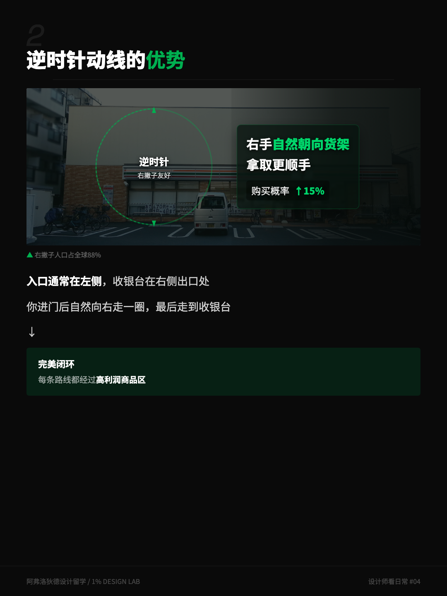
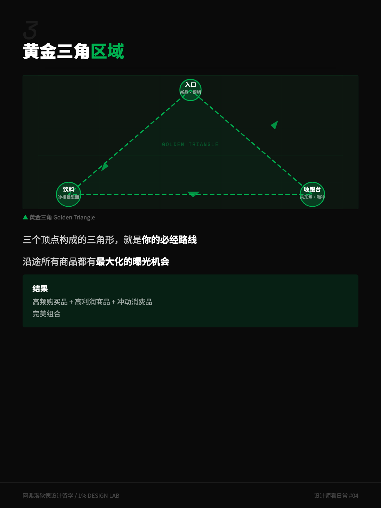
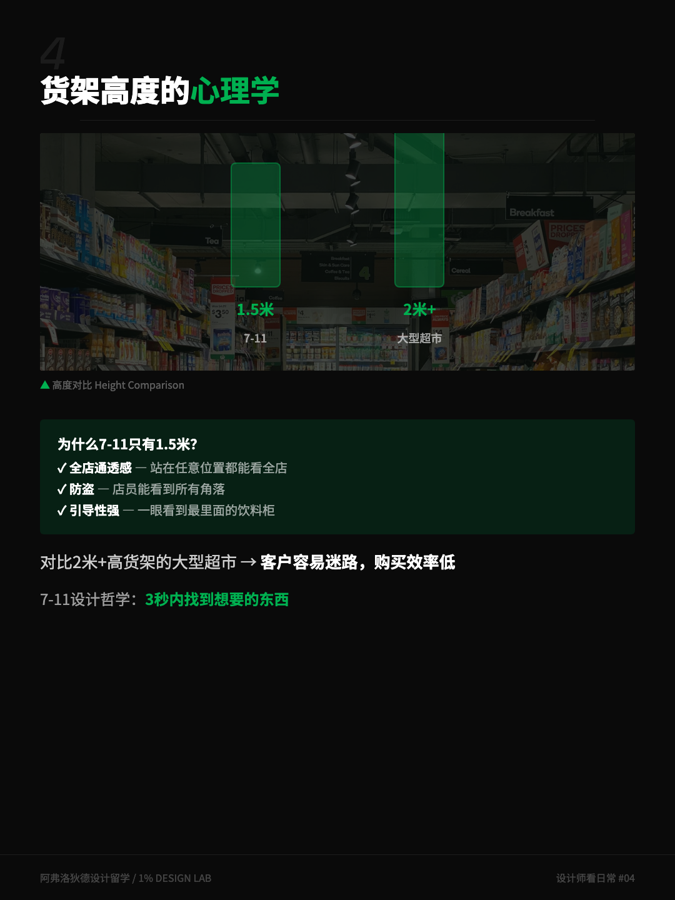
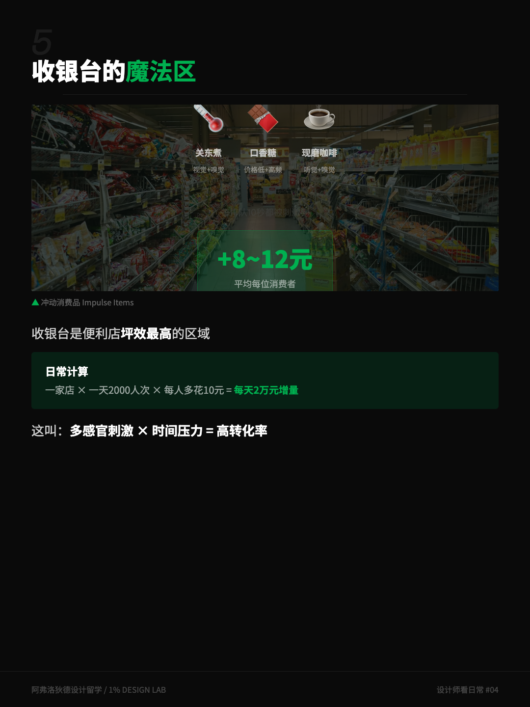

我家楼下有家 7-11，小到站在门口就能看见最里面的冰柜。有天晚上我下去买瓶水，前后待了不到四分钟，出来时手里多了一个饭团、一包薯片，还有一杯现磨咖啡。
这种事发生得多了，我开始怀疑不是我的问题，是这家店的问题。三十来平米，三千多种商品，一个只想买水的人进去，每一步都踩在别人画好的线上。
写公众号或者小红书的时候，这种选题很容易写成「便利店设计有多变态」。这次我想写得诚实一点：先查数据，再拆设计，顺手把流传很广的几组数字也核实一遍。
动笔前我把关键词丢进了 Google Trends。美国区「7-eleven」的搜索热度近三个月涨了接近一倍，但点开蹿升最快的关联词，全是「7-eleven location downsizing」「north america store closures」——北美人在搜它关店。而同一时间的日本，母公司宣布从 2026 年起投入 3000 亿日元，改装 5000 家门店，重点动作之一是延长收银台。
同一家公司，一边在收缩，一边在砸钱。这个对比本身就是这篇文章的起点：7-11 在北美学的是大而全的加油站模式，在日本打磨的是小而精的微空间。北美的店在关，日本的店在改——而改造的钱，大部分花在你脚下那条看不见的路线上。
今天拆的就是这套东西：30㎡ 的动线设计。四个机制，一个一个来。
一、逆时针：一间为右撇子设计的店
7-11 的经典布局是逆时针动线。入口在左侧，收银台在右侧出口，你进门后自然向右绕一圈，最后停在收银台前——一个闭环。
为什么是逆时针？流传最广的解释是：大多数人是右撇子。右撇子进门习惯向右转，逆时针行走时右手始终朝着货架，拿东西更顺手，停留和触摸的概率就更高。
这个方向本身是有据可查的。零售研究者 Paco Underhill 在《Why We Buy》里记录过大量门店观察，发现顾客进门后普遍存在向右的倾向，他管这叫「不变向右」（invariant right）。他的咨询公司 Envirosell 几十年来就在实体店里干这个：架摄像机，数人怎么走。
核查一下：中文互联网上这招常配一句「购买概率提升 15%」。我这次专门去找这个数字的一手出处——没找到。方向有 Underhill 的观察支撑，但精确到 15% 的说法，更像是传播过程中长出来的。信方向，别信数字。

你下次可以留意一个细节：并不是每家便利店都这么摆。在一些后开的、店型不规整的门店里，入口和收银的位置是妥协过的——那种店里，你找水的路线明显更绕。动线是设计的地基，地基歪了，货架摆得再满也补不回来。
二、黄金三角：三个点圈住你的必经之路
日本便利店行业有个经典布局理论，叫「黄金三角」。三个顶点分别是：入口、饮料冰柜、收银台。
入口给你看当季新品和促销；饮料冰柜通常放在离入口最远的位置——水和咖啡是便利店里最高频的需求，把高频品放在最深处，就等于强制每个人把整条货架走廊走完；最后是收银台，等你掏出手机准备付钱，关东煮和现磨咖啡正好出现在视线里。
三个点连成的三角形，就是全店曝光最高的走廊。你在里面「顺便看到」的每一件商品，都不是顺便的。
这件事宜家用一万平米干过一次：整层楼的迷宫动线，让你路过的样板间最大化。7-11 是同一套逻辑的微缩版——一个用一万平米，一个用 30 平米，干的都是一件事：把「路过」变成生意。区别在于宜家要你逛得久，便利店要你走得快、买得多。

三、1.5 米的货架：让你三秒看清全店
7-11 的货架通常不超过 1.5 米。这个高度不是仓库限制，是选择。
低货架带来三件事。第一，通透：你站在店里任何位置，都能看到对面墙——空间安全感是真实存在的体验差异。第二，店员的视线能覆盖全店，防盗成本随之下降。第三，也是最有意思的一点：你一进门就能看见最里面的饮料冰柜，那个「看得见的目标」会把你往店铺深处拉。
对比一下大卖场。两米以上的高货架把人裹在货架峡谷里，找一样东西全靠头顶指示牌，逛二十分钟找不到出口是常态。那是另一种设计哲学：用迷失换停留。便利店反过来——它赌的是你的时间敏感，让你在三秒内定位目标，用「顺手」换加购。
毕马威和连锁经营协会的《2026 中国便利店发展报告》给了一个行业注脚：便利店的增长逻辑正在从「多开门店」切换到「深耕单客」。翻译一下，新店不多了，每一家存量店的每平米效率都要抠——动线就是那把抠效率的刀。

四、收银台前的十秒钟：坪效最高的角落
最后说说收银台——便利店坪效最高的区域，也是这次日本改装计划里明确要「延长」的地方。
注意看收银台周围摆了什么。关东煮和包子，热气顶着你的脸，是嗅觉；口香糖和小零食，就在你掏手机的视线高度，是触手可及；咖啡机在旁边磨豆，是听觉和嗅觉的双重提醒。你排队的那十秒钟，至少被三种感官轮番打过招呼。
这些商品有个统称：冲动消费品。它们不需要你产生需求，只需要在你防线最低的时刻——排队、无聊、钱包已经打开了——出现在你手边。
再核查一下：「平均每个人在收银台多花 8-12 元」这个数字，在小红书和公众号里流传极广，我同样没能找到一手出处。收银区冲动购买是便利店行业公认的利润结构，这个方向我认；但具体到 8-12 元，大概率又是一个传播中固化的数字。比数字更硬的证据是行为：一家公司愿意花 3000 亿日元改装门店，而收银台是重点改造对象——用真金白银投票的判断，比转发的数字可信。

五、把 30㎡ 搬回屏幕上
我是做数字产品的，看这些东西的时候总忍不住对号入座。便利店的四个机制，在产品里全有对应物：
- 逆时针动线 → 信息架构：用户从哪进、先看到什么、在哪里离开，路径是被设计出来的，不存在「自然形成」。
- 黄金三角 → 首屏与高频功能：把高频功能放到路径最深处，逼用户穿越你的核心价值区——很多产品的新手引导就是这么设计的。
- 1.5 米货架 → 界面信息密度：低货架换通透，界面也一样，留白不是浪费，是让用户三秒定位目标的成本。
- 收银台魔法区 → 结账页加购：下单前的推荐位放什么、不放什么，就是你的关东煮摆位。
要说伦理，这套手法本身没有善恶。赌场那篇里我写过，刀握在厨师手里是做菜，握在贼手里是作案。我更欣赏日式便利店的地方在于，它的版本相对诚实：它只是把商品摆在你会经过的路上，标好价格，买不买，最终仍然是你说了算。比起赌场拔掉时钟、快餐店把椅子做得坐不久，这已经算是空间设计里体面的那一档了。
下次进便利店，给自己四个观察动作
- 进门先找收银台：它在你右手边吗？入口和收银是不是把店围成了一个圈？
- 目测货架高度：能不能一眼看到对面的墙？试着找出被高货架挡住的「峡谷区」。
- 看收银台侧面：关东煮、咖啡机、口香糖分别占什么位置？哪一样正对着你排队的视线？
- 反着走一次：故意顺时针逛完，感受一下是不是真的没那么顺手——这个别扭的来源，就是设计。
四个动作做完，你在任何零售空间里都会开始看见那条看不见的路线。这也是我开「设计师看日常」这个系列的原因。
- 「购买概率提升 15%」「收银台多花 8-12 元」两组数字，我未能追溯到一手出处，已在正文中如实标注存疑。方向性结论（右转倾向、收银区冲动购买）分别有 Paco Underhill《Why We Buy》的门店观察与便利店行业共识支撑。
- 7-11 日本母公司 2026 年起投入约 3000 亿日元改装约 5000 家门店、延长收银台的表述，来自广告门 2026 年报道。
- 行业背景参考了毕马威与中国连锁经营协会《2026 中国便利店发展报告》中「从多开门店转向深耕单客」的趋势表述。
- Google Trends 数据为作者 2026 年 8 月自查：美国区「7-eleven」近三个月搜索热度明显上升，上升最快的关联词集中于「store closures」「location downsizing」等关店话题。
- 文中图卡为「设计师看日常」系列自制信息图。本文不构成任何投资或经营建议，只是借一间 30 平米的店，把动线设计这件事拆开来看。